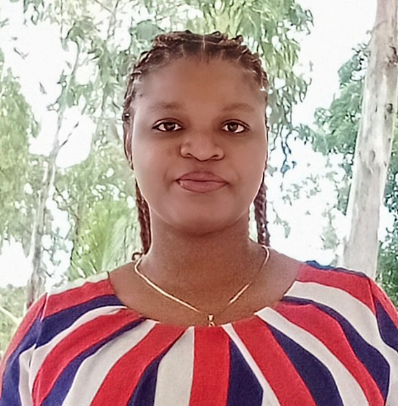

Career Summary

Wonder Munga is a 23-year-old aspiring software engineer with a background in chemical engineering. I began my coding journey in March 2025 with the Power Learn Project, starting formal software engineering training on March 24, 2025. With prior experience as an attache operator at KenGen Kipevu (2023) and KPRL (2024), I’m now blending my technical expertise with skills in web development, database creation, and Python programming. My goal is to develop innovative solutions bridging engineering and software.
Work Samples
- Personal Portfolio Website: A static website built with HTML and CSS, hosted on GitHub Pages.
- Database Project: Designed a basic database to manage data.
- Python Scripts: Small programs written in Python for practical use.
- Business Setup Framework: A conceptual outline for a business.
Professional Accomplishments
- Gained hands-on experience as an attache operator at KenGen Kipevu (2023) and KPRL (2024).
- Transitioned to software engineering with Power Learn Project, March 2025.
- Built and hosted a portfolio website on GitHub Pages within weeks of starting training.
- Created a functional database as part of early coursework.
Skills
- Web Development: Basic proficiency in HTML and CSS.
- Database Management: Ability to design simple databases.
- Programming: Beginner-level Python coding.
- Process Optimization: Experience improving industrial workflows (Chemical Engineering).
- Technical Problem-Solving: Troubleshooting systems from operator roles.
- Data Analysis: Interpreting process data (Chemical Engineering).
- Safety & Compliance: Knowledge of industry standards.
- Team Collaboration: Worked with teams at KenGen and KPRL.
Education and Certifications
Chemical Engineering Degree: Technical University of Kenya (completed prior to 2025).
Software Engineering Training: Power Learn Project, started March 24, 2025 (in progress).